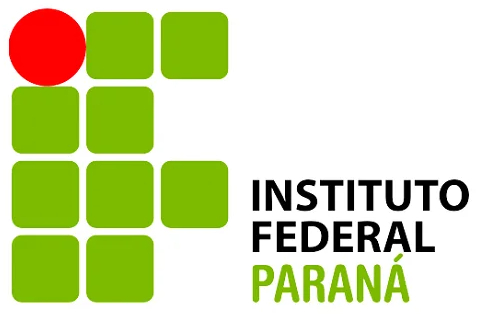

Formação
postado 19 abril 2026
INSTITUTO FEDERAL DO PARANÁ - IFPR
Câmpus Foz do Iguaçu - PR
Curso: Técnico em Hidrologia
Ano: 2012 - 2013
UNIVERSIDADE TECNOLÓGICA FEDERAL DO PARANÁ - UTFPR
Câmpus Medianeira - PR
Curso: Engenharia Ambiental
Ano: 2013 - 2017
Academia Geo - Geoprocessamento e Sensoriamento Remoto
Modalidade EAD
Curso: MBA em Geoprocessamento
Ano: 2022 - 2024
UNIVERSIDADE INTERLAGOS - UNINTER
Modalidade EAD
Curso: Tecnologia em Ciência de Dados
Ano: 2025 - 2027
Curso de Idiomas
FISK
Unidade de Foz do Iguaçu - PR
Cursos:
- Inglês - básico ao avançado
- Preparatório para certificado TOEIC